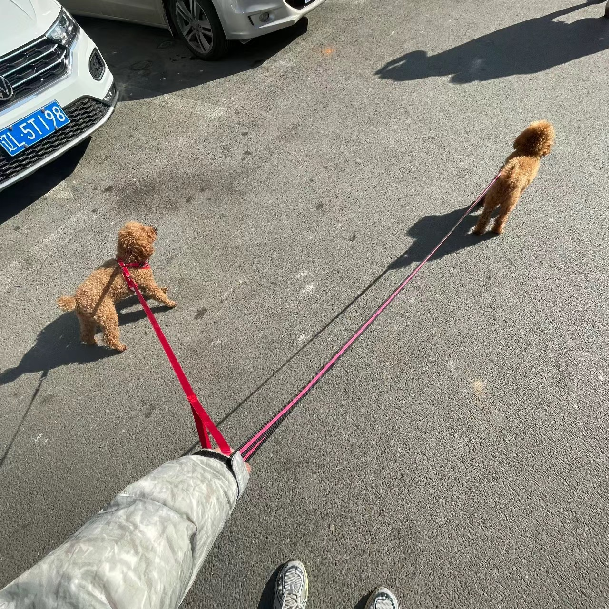
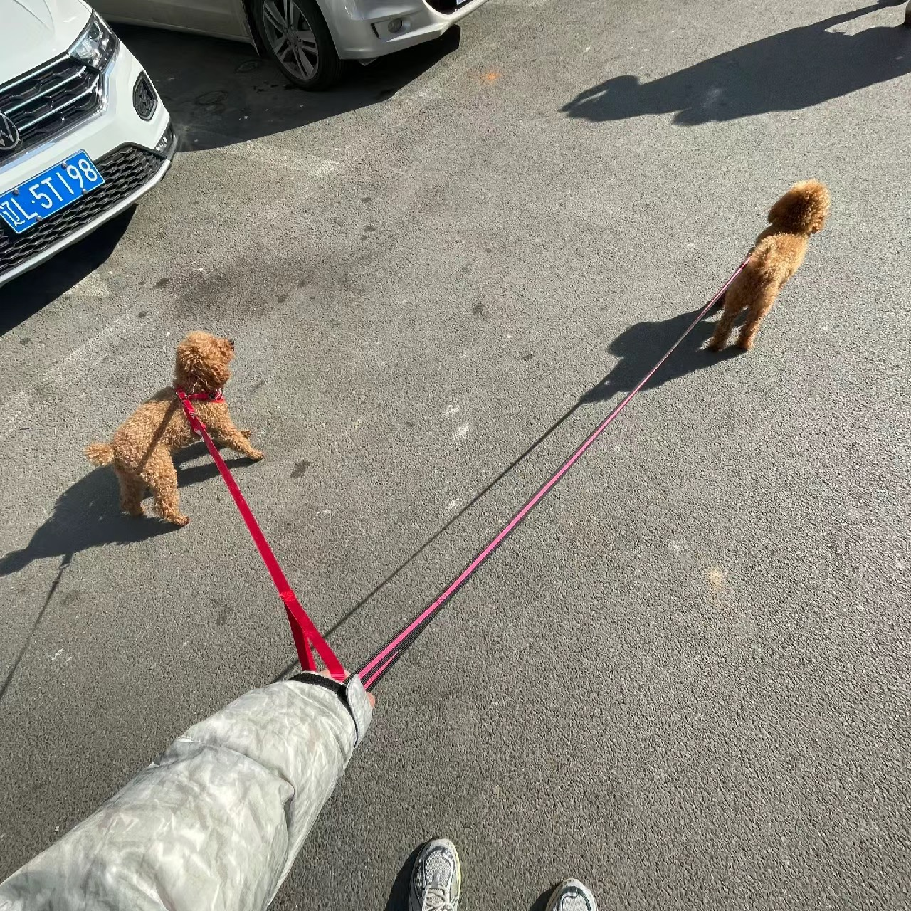

Kaiyuan Hu (whocare)
ABOUT
Hi! I am a M.Phil. in CIE at the Chinese University of Hong Kong, Shenzhen, adivsed by Prof. Fangxin Wang. Before that, I was a bachelor student at the joint programme of Beijing University of Posts and Telecommunications and Queen Mary University of London, advised by Prof. Anfu Zhou. My research interests lie at the intersection of multimedia systems, 3D reconstruction, wireless sensing, and human-computer interaction.
EDUCATION
M.Phil. in CIE, the Chinese University of Hong Kong, Shenzhen.
September 2022 - July 2024
B.E. in Telecommunications Engineering with Management, joint program of BUPT & QMUL.
September 2018 - June 2022
PUBLICATION & PREPRINTS
[IJCAI'24 (Oral)]
AI-Enhanced Virtual Reality in Medicine: A Comprehensive Survey.
link websiteYixuan Wu*, Kaiyuan Hu*, Danny Z. Chen, Jian Wu.
[MICCAI'24 (Oral)]
TeleOR: Real-time Remote Operating Room
Yixuan Wu*, Kaiyuan Hu*, Qian Shao, Jintai Chen, Danny Z. Chen, Jian Wu.
[ACM MM'23 (Oral)]
Understanding User Behavior in Volumetric Video Watching: Dataset, Analysis and Prediction.
link websiteKaiyuan Hu, Haowen Yang, Yili Jin, Yongting Chen, Fangxin Wang.
[ACM MMSys'23 (Oral)]
FSVVD: A Dataset of Full Scene Volumetric Video.
link websiteKaiyuan Hu, Yili Jin, Haowen Yang, Junhua Liu, Fangxin Wang.
[IEEE ICASSP'24 (Oral)]
mmCount: Stationary Crowd Counting System Based on Commodity Millimeter-wave Radar.
linkKaiyuan Hu, Hongjie Liao, Mingxiao Li, Fangxin Wang.
[Ubicomp-IMWUT]
mTransSee: Enabling Environment-Independent mmWave Sensing Based Gesture Recognition via Transfer Learning.
linkHaipeng Liu, Kening Cui, Kaiyuan Hu, Yuheng Wang, Anfu Zhou, Liang Liu, Huadong Ma.
[TCSVT]
IVORY: Immersive VR Video Conferencing via On-hand Devices.
Yili Jin, Xize Duan, Kaiyuan Hu, Fangxin Wang, Steve(Xue) Liu.
[IEEE Network'24]
A Networking Perspective of Volumetric Video Service: Architecture, Opportunities and Case Study.
Yili Jin*, Junhua Liu*, Kaiyuan Hu*, Fangxin Wang.
[Preprint]
LiveVV: Human-Centered Live Volumetric Video Streaming System.
linkKaiyuan Hu, Yongting Chen, Kaiying Han, Haowen Yang, Junhua Liu, Yili Jin, Boyan Li, Fangxin Wang.
[Preprint]
From Capture to Display: A Survey on Volumetric Video
linkYili Jin*, Kaiyuan Hu*, Junhua Liu, Fangxin Wang, Steve(Xue) Liu.
EXPERIENCES
INML Lab at CUHKSZ
--------------------------------------------- Sept. 2022 - till now
- Master of Philosophy, advised by Prof. Fangxin Wang.
Network Technology Center, BUPT
------------------------------- June. 2020 - June.2022
- Research Intern, advised by Prof. Anfu Zhou.
Track & Field Team of International School, BUPT
-------------- June. 2019 - June.2020
- Captain
HOBBIES AND INTERESTS
- I am a amateur athlete, specializing in the 100m/200m sprint.
- I also like road bikes, hiking and walking my dogs.
 

CONTACT
Name: Kaiyuan Hu (whocare)
Address: 2001 Longxiang Boulevard, Longgang District, Shenzhen
Phone Number/WeChat: +86 15668730946
E-mail: kaiyuanhu@link.cuhk.edu.cn